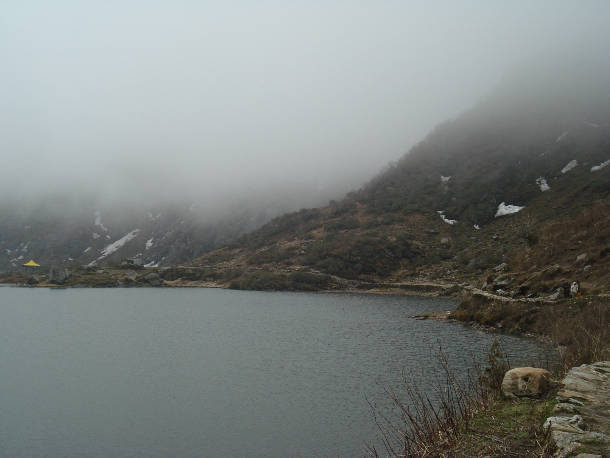

"Sikkim — the 'Brother' of the Seven Sisters — is a Himalayan paradise of high-altitude lakes, ancient monasteries, and the majestic Kanchenjunga. From the crystalline waters of Gurudongmar to the prayer flags fluttering over Rumtek, Sikkim offers a spiritual and scenic journey like no other."
"सिक्किम — सात बहनों का 'भाई' — उच्च ऊंचाई वाली झीलों, प्राचीन मठों और भव्य कंचनजंगा का एक हिमालयी स्वर्ग है। गुरुडोंगमार के क्रिस्टल पानी से लेकर रुमटेक के प्रार्थना झंडों तक, सिक्किम एक अनूठी आध्यात्मिक यात्रा प्रदान करता है।"
PLACES TO VISIT / घूमने के स्थान



TSOMGO LAKE
छांगु झील
A sacred glacial lake at 12,400 ft. Its colors change with the seasons, from bright turquoise to frozen white in winter.
12,400 फीट पर स्थित एक पवित्र हिमनद झील। इसके रंग मौसम के साथ बदलते रहते हैं। याक की सवारी का आनंद लें।


RUMTEK MONASTERY
रुमटेक मठ
The largest monastery in Sikkim and the seat of the 17th Karmapa. Known for its exquisite Tibetan Buddhist architecture.
सिक्किम का सबसे बड़ा मठ और 17वें कर्मापा का निवास स्थान। अपनी उत्कृष्ट तिब्बती वास्तुकला के लिए प्रसिद्ध।
FOOD & CUISINE / भोजन
MOMOS & THUKPA
The soul of Sikkimese food. Steamed dumplings (Momos) and hot noodle soup (Thukpa) served in the chilly mountain air.
सिक्किम के भोजन की आत्मा — मोमोज और थुक्पा। ठंडी पहाड़ी हवा में गर्मागर्म परोसा गया।